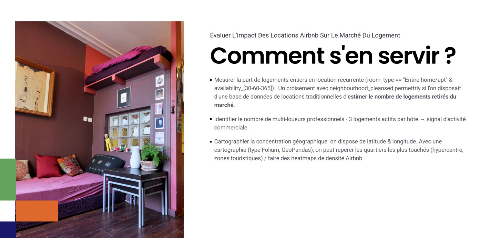

Conception et exploitation d'une base NoSQL
Mise en Å“uvre: restauration sous MongoDB, inspection des documents BSON/JSON et organisation des collections
Valeur ajoutée: adaptation a des données semi-structurees sans rigidite de schema relationnel
Concevoir et analyser une base MongoDB pour etudier l'offre Airbnb a Paris dans la perspective de l'effet Jeux Olympiques 2024 sur le logement

Mise en Å“uvre: restauration sous MongoDB, inspection des documents BSON/JSON et organisation des collections
Valeur ajoutée: adaptation a des données semi-structurees sans rigidite de schema relationnel
Mise en Å“uvre: diagnostic des types, heterogeneite des champs, schema JSON et pipeline de verification
Valeur ajoutée: meilleure comprehension des limites et forces des données scrapees
Mise en œuvre: analyses sur disponibilite, logements entiers, multi-loueurs, super-hôtes et répartition geographique
Valeur ajoutée: production d'indicateurs utiles pour l'etude de l'impact logement/JO 2024
Mise en œuvre: scripts PowerShell de replica set, cluster sharde, déplacement de chunks et tests sequentiels
Valeur ajoutée: démonstration de notions d'architecture distribuée et de résilience
Mise en Å“uvre: guides Windows, Jupyter, scripts PS1 et sequence de tests documentee
Valeur ajoutée: facilitation de la reprise du projet et de son execution par un tiers
Concevoir et analyser une base MongoDB pour etudier l'offre Airbnb a Paris dans la perspective de l'effet Jeux Olympiques 2024 sur le logement
Base MongoDB restauree, scripts replica set/sharding, requetes analytiques, notebooks d'analyse, documentation d'exploitation